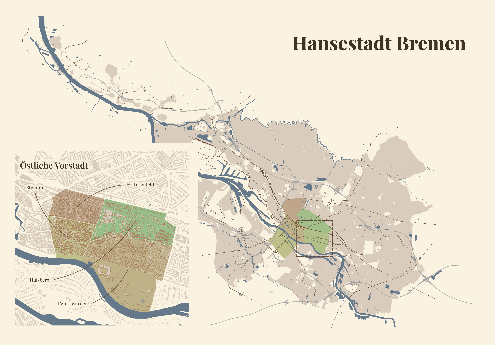

## colors
col_plot_bg <- "#faf3e1"
col_strokes <- "#443525"
col_areas <- "#efe8e1"
col_water <- "#405a75"
pergamono <- c("#201912", "#413324", "#624c36",
"#836648", "#a4805a", "#b6997b",
"#c8b29c", "#daccbd", "#ece5de")
colors_zentrum <- c("#bfa58a","#bfb289","#bebf89",
"#b1bf89","#a3bf89","#96bf89")
colors_ostvor <- c("#bfa58a", "#96bf89", "#bfb289", "#bebf89")
## ggplot theme & defaults
theme_set(
theme_void() +
theme(
legend.position = "none",
panel.border = element_rect(fill = NA, color = col_strokes),
panel.background = element_rect(fill = col_plot_bg),
plot.background = element_rect(fill = col_plot_bg),
strip.background = element_rect(fill = col_plot_bg),
)
)
update_geom_defaults("point", list(colour = col_strokes))
update_geom_defaults("line", list(colour = col_strokes))
update_geom_defaults("area", list(colour = "transparent",
fill = pergamono[8]))
update_geom_defaults("rect", list(colour = "transparent",
fill = pergamono[8]))
update_geom_defaults("sf", list(colour = "transparent",
fill = pergamono[8]))
update_geom_defaults("density", list(colour = col_strokes,
fill = pergamono[8]))
update_geom_defaults("bar", list(colour = col_plot_bg,
fill = pergamono[8]))
update_geom_defaults("col", list(colour = col_plot_bg,
fill = pergamono[8]))
update_geom_defaults("text", list(colour = pergamono[2]))
update_geom_defaults("label", list(colour = pergamono[2]))tl;dr: Drawing a beautiful map of my hometown Bremen as an exercise in dealing with geospatial data. This post is heavily inspired by this one from Timo Grossenbacher.

The data
All of the data I used is available from official sources for free. Although I’m not allowed to provide it directly, I’ll do my best to describe what exactly I used and where you’d get it.
The different elements of the map come from these shapefiles:
- Geography: Instead of using only drawn borders, I’m going for a more organic look. I used the geographies from this INSPIRE dataset.
- City districts: Or “Verwaltungsgrenzen” as we say in Germany; we’re using
hb_ortsteile_BRE.shp. - Buildings: Or “Liegenschaften”, yet another beautiful german administration term;
GebaeudeBauwerk.shp. - Water bodies: The shapefile for all things water-y is
gew01_f.shpand comes from the “Basis DLM”. - Train tracks: I like trains and public transport. Again, the file from the Basis DLM is
ver03_l.shp. - Streets: A file of the “Strassennetz”, containing pretty much what it says on the tin.
I also used the Google font Playfair Display for all text. I’ll just assume you know how to get, install and make it available to R/ggplot2 - I used the extrafont package to do so.
Theme and colors
To make experimentation easier, I defined the colors and other general aesthetic elements in a separate file.
Preparing the Map
Not every shapefile is projected onto the same CRS, so that has to change. Also, I only want to plot the city of Bremen and a little of the surroundings. Zooming-in to the Östliche Vorstadt (the “Viertel”) needs a lot of subsetting, especially of the shapefile containing the buildings. Needless to say, the file paths are not reproducible at all and you’d have to adjust them to suit your setup.
Main Map - The Whole City
geografie <- read_sf("shapefiles/Geologische_Karte/gk_gdfb_052024_inspire_HB.shp") %>%
st_transform(crs = "EPSG:5677") %>%
mutate(y = st_coordinates(st_centroid(.))[, 2]) %>%
filter(y < 5890000) %>%
st_make_valid() %>%
select(-y)
ax_gewaesser <- read_sf("shapefiles/Basis_DLM/gew01_f.shp") %>%
st_transform(crs = "EPSG:5677")
ortsteile <- read_sf("shapefiles/Verwaltungsgrenzen/hb_ortsteile_BRE.shp") %>%
st_transform(crs = "EPSG:5677")
zentrum <- ortsteile %>%
filter(bez_st %in% c("Mitte", "Neustadt", "Östliche Vorstadt",
"Schwachhausen", "Findorff"),
!(bez_ot %in% c("In den Hufen", "Riensberg", "Huckelriede",
"Radio Bremen", "Neuenland", "Neu-Schwachhausen")))
strassen <- read_sf("shapefiles/Strassennetz/Strassennetz.shp") %>%
st_transform(crs = "EPSG:5677") %>%
mutate(y = st_coordinates(st_centroid(.))[, 2]) %>%
filter(y < 5920000, StrassenAr != "G") %>%
select(-y)
ax_bahnstrecke <- read_sf("shapefiles/Basis_DLM/ver03_l.shp") %>%
st_transform(crs = "EPSG:5677")Zoomed Area - Östliche Vorstadt
Since buildings are only needed in the sub-plot and the respective shapefile is rather huge, I actually factored out the subsetting of the parts I need - see prep_buildings.R script in the github repository.
ostvor <- ortsteile %>%
filter(bez_st == "Östliche Vorstadt")
bauwerke <- read_sf("shapefiles/Liegenschaften/GebaeudeBauwerk.shp") %>%
st_transform(crs = "EPSG:5677")
zentrum_bauwerke <- bauwerke[zentrum, ]
ostvor_bauwerke <- zentrum_bauwerke[ostvor, ]
ostvor_buff <- ostvor %>%
st_centroid() %>%
st_buffer(1000)
ostvor_bbox <- ostvor_buff %>%
st_bbox() %>%
st_as_sfc()
bbox_wasser <- ostvor_buff %>%
st_bbox() %>%
st_as_sfc() %>%
st_intersection(ax_gewaesser)
bbox_bauwerke <- ostvor_bbox %>%
st_intersection(bauwerke)I also create a tibble to make the annotations somewhat more data-driven1. I did some legwork to find the coordinates for the labels, see the bonus bit at the end.
ostvor_centroids <- ostvor %>%
st_centroid() %>%
st_coordinates() %>%
as_tibble()
ostvor_annotations <- tibble(
ortsteil = ostvor$bez_ot,
x = c(3487947, 3489651, 3488957, 3488278),
xend = ostvor_centroids$X,
y = c(5882982, 5883134, 5880991, 5881416),
yend = ostvor_centroids$Y,
curvature = c(0.2, 0.1, -0.1, -0.2),
nudge_x = c(0, 50, -50, -50),
nudge_y = c(50, 0, 0, 0),
hjust = c(.5, 0, 1, 1),
vjust = c(0, .5, .5, .5)
)Get mappin’!
Now to create the actual map. One final bit beforehand is a somewhat hack-ish approach to get rid of bits of districts or the geography that overlaps with the water bodies. This is not a very clean or even necessary thing to do, but while working on the map I liked to adjust the transparancy of the water color instead of the water color itself. I encourage you to plot the map with and without these bits to get a better idea of what I mean.
inter_geografie <- st_intersection(ax_gewaesser, geografie)
inter_zentrum <- st_intersection(ax_gewaesser, zentrum)
inter_ostvor <- st_intersection(bbox_wasser, ostvor)Main Map
main_area <- ggplot() +
scale_fill_manual(values = colors_zentrum) +
scale_color_manual(values = colors_zentrum) +
geom_sf(data = geografie) +
geom_sf(data = inter_geografie, fill = col_plot_bg) +
geom_sf(data = zentrum, aes(fill = bez_st)) +
geom_sf(data = inter_zentrum, fill = col_plot_bg) +
# use st_buffer() to make tracks, streets and water bodies look more organic
geom_sf(data = ax_gewaesser[st_buffer(ortsteile, 1000), ],
fill = col_water, alpha = .8) +
geom_sf(data = ax_bahnstrecke[st_buffer(ortsteile, 1500), ],
color = "#624c36", linewidth = .3, linetype = 6) +
geom_sf(data = strassen[st_buffer(ortsteile, 1200), ],
color = "#a4a4a4", linewidth = .5) +
geom_text(aes(x = 3502357, y = 5899710, label = "Hansestadt Bremen"),
family = "Playfair Display ExtraBold", size.unit = "pt", size = 44,
hjust = 1, vjust = 1) +
# draw a rectangle around the area we're about zoom-in on
geom_sf(data = ostvor_bbox,
fill = "transparent", color = pergamono[3],
linetype = "5151", linewidth = .75)Zoomed Area
zoom_area <- ggplot() +
scale_fill_manual(values = colors_ostvor) +
scale_color_manual(values = colors_ostvor) +
geom_sf(data = ostvor, aes(fill = bez_ot),
alpha = 1, color = col_plot_bg) +
geom_sf(data = inter_ostvor, fill = col_plot_bg) +
geom_sf(data = bbox_wasser, fill = col_water, alpha = .8) +
geom_sf(data = bbox_bauwerke, color = pergamono[8]) +
geom_sf(data = ostvor_bauwerke, color = pergamono[5]) +
geom_curve(data = ostvor_annotations, curvature = .2,
aes(x = x, xend = xend, y = y, yend = yend),
color = pergamono[3]) +
geom_label(data = ostvor_annotations, family = "Playfair Display Medium",
aes(x = x, y = y, label = ortsteil, hjust = hjust, vjust = vjust),
nudge_x = ostvor_annotations$nudge_x, nudge_y = ostvor_annotations$nudge_y,
alpha = .6, fill = col_plot_bg, label.padding = unit(0.2, "lines"),
label.r = unit(0.1, "lines"), label.size = 0, color = pergamono[2]) +
geom_label(aes(x = 3487664, y = 5883384, label = "Östliche Vorstadt"),
family = "Playfair Display SemiBold", size.unit = "pt", size = 20,
alpha = .6, fill = col_plot_bg, label.padding = unit(0.2, "lines"),
label.r = unit(0.1, "lines"), label.size = 0,
hjust = 0, vjust = 0, nudge_x = -30)Tying it all together
I use the patchwork package to place the zoomed area on the bottom-left of the main area.
main_area + inset_element(
zoom_area,
right = .4,
top = .6,
left = unit(0, 'npc') + unit(.5, 'cm'),
bottom = unit(0, 'npc') + unit(.5, 'cm')
)Bonus: finding coordinates to place text & labels
Footnotes
Again, credit goes to Timo’s work for this part in particular!↩︎